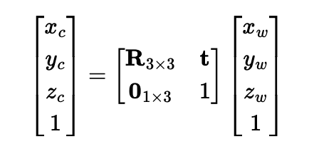
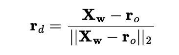

Part 0: Calibrating Your Camera and Capturing a 3D Scan
Some original cpatured images
Images in Viser
Note: I didn't do image undistort because I feel my camera didn't cause too much distoriton and won't affect training
Part 1: Fit a Neural Field to a 2D Image
Model Archtecture
mlp = nn.Sequential(
nn.Linear(82, 256),
nn.ReLU(),
nn.Linear(256, 256),
nn.ReLU(),
nn.Linear(256, 256),
nn.ReLU(),
nn.Linear(256, 3),
nn.Sigmoid()
)
lr = 1e-2
num_epochs = 3000
batch_size = 10000
optimizer = torch.optim.Adam(mlp.parameters(), lr=1e-2)
criterion = torch.nn.MSELoss()
L = 20


Hyperparameter Comparision
After training for 2000 iterations
Comparing the four different outputs, we can see the width of MLP determine if MLP can actually learn enough information about general color in each area. Then max positional encoding layers determine how many different frequence the model can learn. If width of the channel low like (2,2), the model can't learn actaul color distribution which cause it only depict general fox area with uniform color. High L and low channle width, just let model learn some sharp edge of the fox. If L max position encoding layer is low, model can't extract that many details from the image. That's why L =2 with big channel width produce image with big color chunks no detail texture.
Part 2: Fit a Neural Radiance Field from Multi-view Images
Part 2.1: Create Rays from Cameras
Frist implement a function x_w = transform(c2w, x_c) using following formula
Then implement a function x_c = pixel_to_camera(K, uv, s) which transform 2d image coord to camera coord
I first inverse K, then use formula s * K_inv @ uv.T to calculate camera coord
Then implement function ray_o, ray_d = pixel_to_ray(K, c2w, uv)
I first use pixel_to_camera(K, uv, s) to convert uv into camera coordinate with s =1 then I use transform(c2w, x_c) to convert uv into world coordinate, then I use following formula to normalize the ray direction.
Part 2.2: Sampling
Sampling Rays from Images
First I need to sample rays from images data, I created an class call RaysData
with following attribute:
def __init__(self, images, K, c2ws, full_control = False):
self.images = images # all images captured
self.K = K # camera matrix
self.c2ws = c2ws # camera to world matrix
self.uvs = None # all coordinates
self.pixels = None # all pixel values
self.rays_o = None # all ray origin
self.rays_d = None # all ray direction
To implement full control, I iterate over all images to generate all possible coordinate for each images then I generate matching rays from each coordinates using functions pixel_to_ray(K, c2w, uv) and store matching pixle values
To implement ray sampling, I create function def sample_rays(self, N, M=100) N: total ray want sampled, M: number of images to sample ray from
I calculate N//M to get number ray in each sampled images. I fisrt sample M images then sample N//M rays from each selected images
Implement Sampling Points along Rays
def sample_along_rays(r_os, r_ds, n=32, near=2.0, far=6.0, perturb=True, random=True):
I uniformly create some samples along the ray (t = np.linspace(near, far, n_samples)).
Then convert each points to actual 3D coord sampled_x = r_os + r_ds * t
Then I introduce some small perturbation to the points t = t + (np.random.rand(*t.shape) * t_width)
Part 2.4: Neural Radiance Field
I implement my NeRF MLP base on following structure. MLP takes in two input: position encoding of 3D coord for a points and position encoding of 3D direction for ray output two things: density and rgb color for corresponding input. I implement using pytorch. I implement position encoding function in pytorch using this formula.
To improve modeling training, I tried to normalize the sampled point input by do the following
rays_o, rays_d, pixels = dataset.sample_rays(20000, M=len(images_train))
points, _ = sample_along_rays(rays_o, rays_d, n=64, near=near, far=far, perturb=True)
bbox_min, bbox_max = get_boundingbox(points)
points_norm = points_normalization(points, bbox_min, bbox_max)
Part 2.5: Volume Rendering
Using following formula, I can calculate actual pixel value from NeRF MLP's output.
I built function def volrend(sigmas, rgbs, step_size):
Lego Example
I trained with
batch_size = 10000
num_epochs = 1000
coord_pe_layers = 10
ray_pe_layers = 4
near, far = 2, 6
Sampling Rays and Points during iter=100
Part 2.6: Training with Your Own Data
To make training faster, I resize all image to 1/4 * h and 1/4 * w
I used the same MLP construction showed above, and here is the Hyperparameter
batch_size = 10000
num_epochs = 3000
coord_pe_layers = 10
ray_pe_layers = 4
near, far = 0.02, 0.5
Explaination: 1. I trained longer epochs to let MLP actually detect my obejct, my object is relatively small. 2. I chose near, far = 0.02, 0.5 because my object is around 15 cm away from my camera 3. I keep same PE layers since it captured enough details and don't explode my GPU
I didin't change too much code